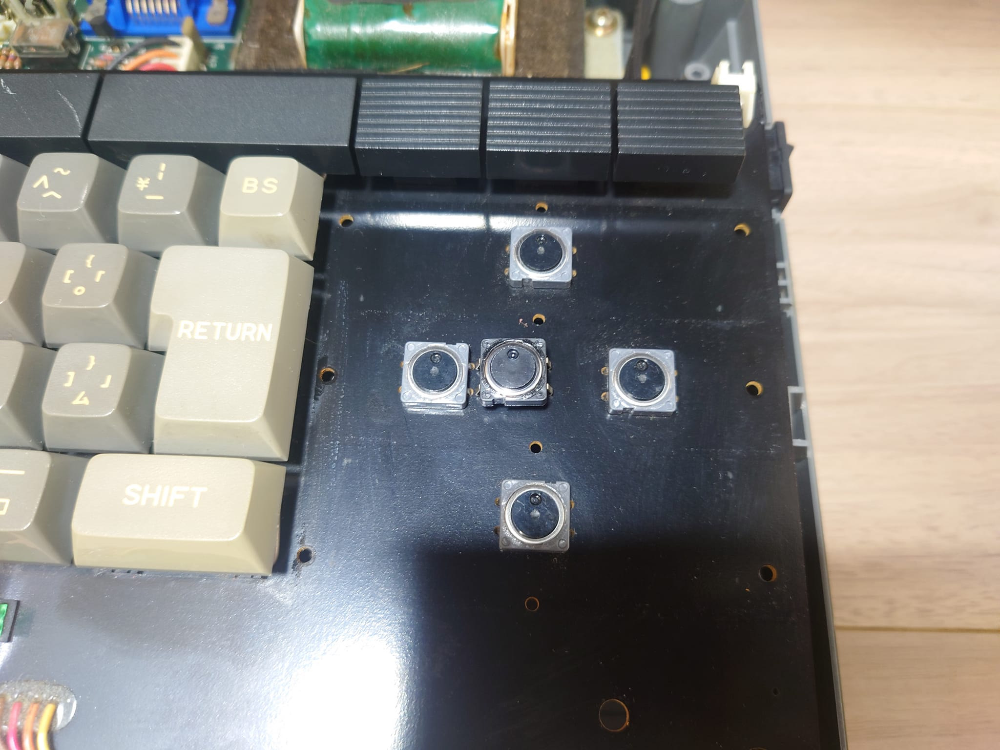
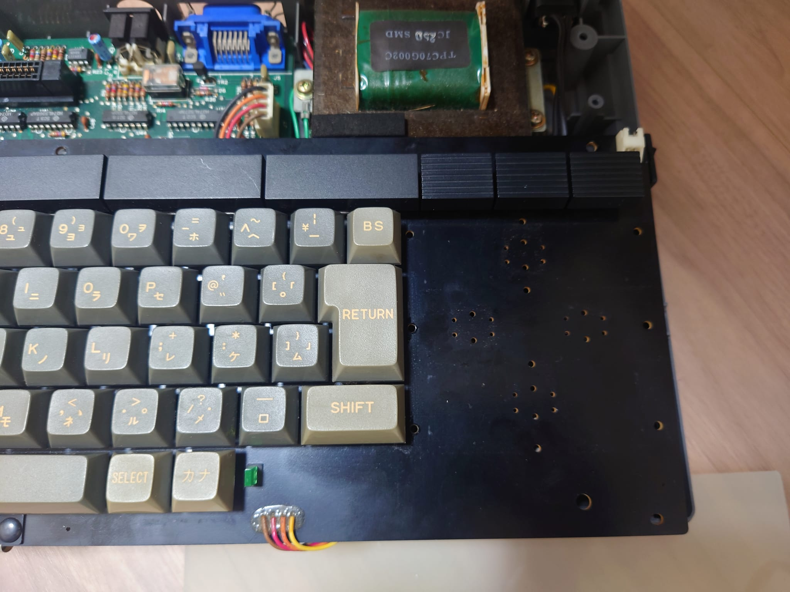
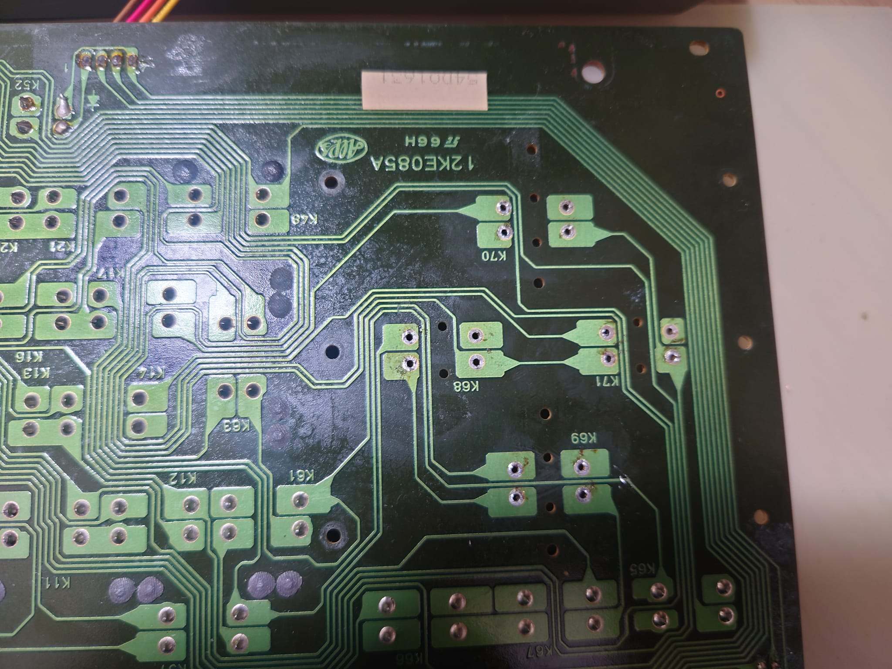
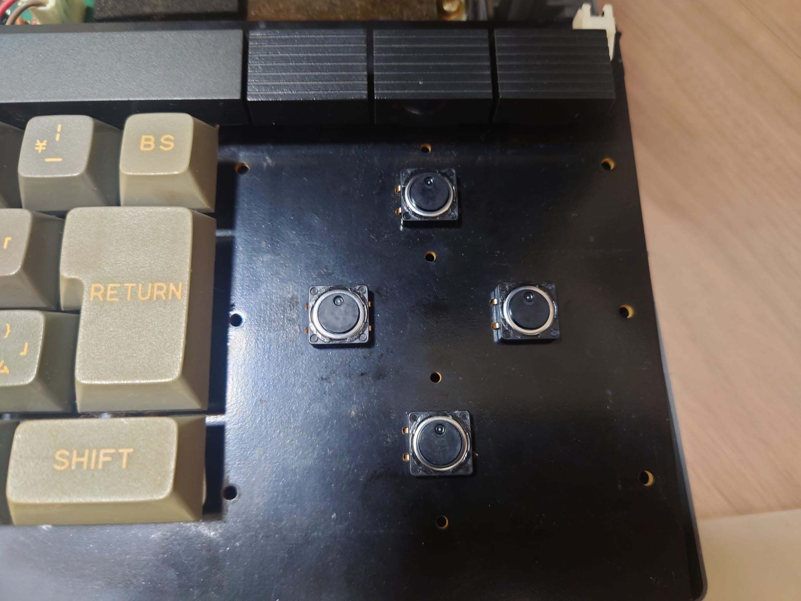

CANON V-20 メンテナンス 【カーソルキーのタクトスイッチ】
V-20の大きなカーソルキーは凄く特徴的なデザインだと思いますが、このカーソルキー、なんとボタンの実体は小さなタクトスイッチなのです。

タクトスイッチなのはカーソルキーだけですね。
タクトスイッチは、経年で劣化するので反応が鈍いのはこのスイッチが劣化しているのが原因だろう、と考えました。新品に交換です。
上の写真のグレーのスイッチがもともと付いていたスイッチ。中央に置いてある黒いスイッチが新品のスイッチですね。
早速、元のスイッチを取り外します。半田吸い取り線で半田を丁寧に除去するとポロッととれます。編に力を入れると基板のパターンを剥がしたりするので要注意です。
それでも、この基板は片面基板なのでやりやすいですね。


新しいスイッチは寸法も一緒なので、普通に取り付ければおしまい。

使ったタクトスイッチはこちらです。
外部サイト タクトスイッチ
[前へ][次へ]